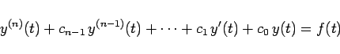
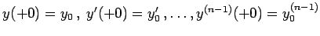
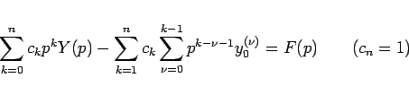
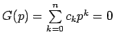

Inhalt Index DeskTop Bronstein

 Integraltransformationen Laplace-Transformation Lösung von Differentialgleichungen mit Hilfe der Laplace-Transformation Gewöhnliche Differentialgleichungen mit konstanten Koeffizienten
Integraltransformationen Laplace-Transformation Lösung von Differentialgleichungen mit Hilfe der Laplace-Transformation Gewöhnliche Differentialgleichungen mit konstanten Koeffizienten


Die Differentialgleichung n-ter Ordnung
|  | (15.47a) |
mit den Anfangswerten  geht durch LAPLACE-Transformation in die Gleichung
|  | (15.47b) |
über. Dabei ist  die charakteristische Gleichung der Differentialgleichung.